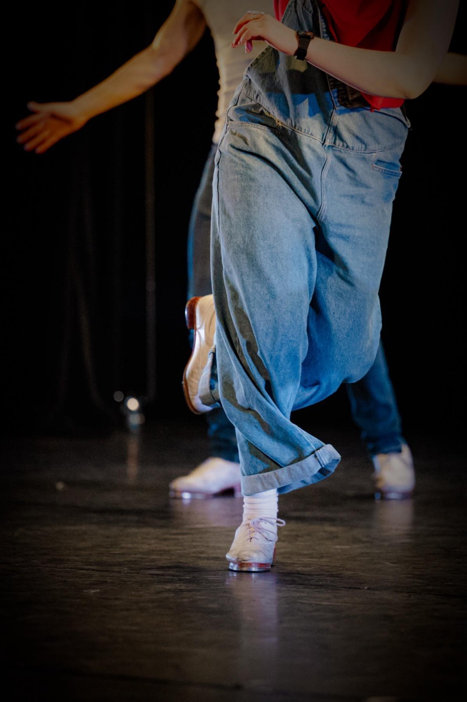

Workshops
Twee volle dagen, elk niveau
Workshops voor beginners, gevorderden en alles daartussenin — gegeven door het team van Tapdance Promotion en uitgenodigde gastleraren. Elke editie brengt zijn eigen mix van ritmewerk, choreografie en stijl.

© Stijn DejonckheereGents tapdansfestival · België
Twee volle dagen tap — workshops, voorstellingen en meer — in het hart van Gent.
Wat is het Gent Tap Festival
Tap is ritme dat je ziet.
Eén keer per jaar vult Gent zich met de klank van metaal op hout. Het Gent Tap Festival is een weekend tapdans — workshops voor elk niveau, een avondvoorstelling en de energie van dansers uit heel België, Nederland en daarbuiten, allemaal onder één dak.
Sinds 2023 brengt het festival toonaangevende tapdansleraren naar Gent om les te geven en op te treden — en bouwt het elke editie verder aan een community die jaar na jaar terugkeert.
Gehost door Tapdance Promotion
Bij Shoonya Dance Centre · Stapelplein 41, 9000 Gent
Georganiseerd met de steun van Stad Gent & Gent Sport
Wat er gebeurt
Een vol weekend tap — overdag leren, 's avonds optreden, en daartussen ritmes uitwisselen.
Workshops
Workshops voor beginners, gevorderden en alles daartussenin — gegeven door het team van Tapdance Promotion en uitgenodigde gastleraren. Elke editie brengt zijn eigen mix van ritmewerk, choreografie en stijl.
Avondvoorstelling
Een avondshow in de Shoonya-ruimte, waar leraren en gastartiesten optreden voor een zittend publiek. Vorige edities brachten rondreizende artiesten die ritme, verhaal en geschiedenis naar een volle zaal brachten.
En meer
Elke editie heeft zijn eigen kleur — gratis proeflessen voor iedereen, open tapavonden, cutting contests en de informele momenten die een community maken. Het programma varieert per editie.
De volgende editie
Het volledige programma en de exacte data worden aangekondigd via Instagram voor elke editie. Volg @shoonyadance om als eerste te weten wanneer de inschrijvingen openen.
Volg @shoonyadancePraktisch
De constanten van editie tot editie. Exacte data, leraren en tickets worden elk jaar bevestigd — al het andere hieronder is hoe het Gent Tap Festival altijd werkt.
Shoonya Dance Centre, Stapelplein 41, 9000 Gent. Alle workshops en de avondvoorstelling vinden onder één dak plaats — vijf studio's en een theaterpodium.
Alle niveaus welkom. Workshops zijn gelabeld per niveau — beginner, gevorderd-beginner, intermediate, advanced. Geen voorkennis nodig voor de beginners- en proeflessen.
Harde tapschoenen zijn verplicht voor de workshops. Heb je nog geen paar? Volg eerst de gratis proefles — vraag daarna je leraar of dansschool naar huur- of aankoopopties.
Op 10 minuten wandelen van station Gent-Dampoort. Straatparkeren op het Stapelplein, en het stadscentrum is vlakbij.
Inschrijvingen openen voor elke editie via shoonyadance.com. Een Shoonya ID is vereist voor alle inschrijvingen.
Neem contact op via de Shoonya contactpagina, of volg @shoonyadance voor nieuws en aankondigingen.
Vorige edities
Elke editie brengt zijn eigen gastartiesten, zijn eigen energie, en dezelfde community die jaar na jaar terugkeert.
2026
Vierde editie
Josh Hilberman bracht zijn show Not Dead Yet: Dances & Stories naar het Shoonya Theater voor twee uitverkochte voorstellingen op zaterdagavond. Het weekendprogramma bevatte workshops van Alexandre van Goethem, Peter Kuit, Josh Hilberman en La Liz (palmas) — én een gratis proefles voor iedereen.
2025
Derde editie
Het programma groeide met internationale gasten en een Open Tap Night — voorstellingen en een cutting contest — in het Minardtheater in het hart van Gent. Workshops met Jep Melendez, Estephania en Teddy.
2024
Tweede editie
Jep Melendez, Josh Hilberman en Joëlle Ribant leidden workshops over het weekend, met dansers uit België, Nederland en daarbuiten. De Open Tap Night op zaterdagavond bracht een cutting contest.
2023
Eerste editie
Het eerste Gent Tap Festival — een nieuw thuis voor de tapdansgemeenschap in Gent, bij Shoonya Dance Centre.